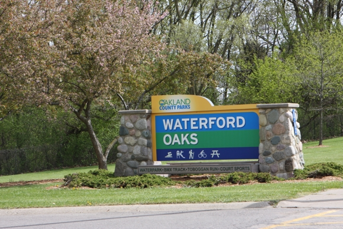

| A logo of some sort | Oakland County Trails | questions? |
|---|---|---|
Home > Parks > Waterford >Waterford Oaks When I first noticed Waterford Oaks, I only saw the backside of it. I was driving down Telegraph and saw some paths in a foresty looking area. When I got home, I took a look on Google maps. When there were no trails mapped, I could see a faint outline of trails. After some researching, I found a website (below) and went for a ride. It was still early in the year, so there was quite a bit of mud, but it was fun nonetheless. |
 Above: Photos of the park. Below: An embedded Google maps overview. There are no mapped trails. My GPS tracker wasn't working that day. |
|